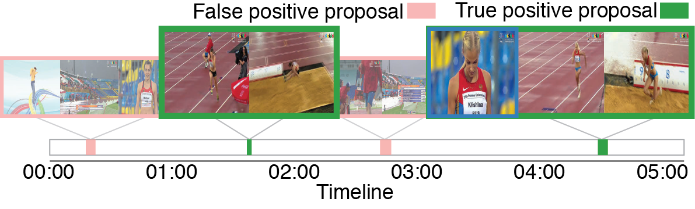

Fast Temporal Activity Proposals for Efficitent Detection of Human Actions in Untrimmed Videos
Summary
In many large-scale video analysis scenarios, one is interested in localizing and recognizing human activities that occur in short temporal intervals within long untrimmed videos. Current approaches for activity detection still struggle to handle large-scale video collections and the task remains relatively unexplored. This is in part due to the computational complexity of current action recognition approaches and the lack of a method that proposes fewer intervals in the video, where activity processing can be focused. In this paper, we introduce a proposal method that aims to recover temporal segments containing actions in untrimmed videos. Building on techniques for learning sparse dictionaries, we introduce a learning framework to represent and retrieve activity proposals. We demonstrate the capabilities of our method in not only producing high quality proposals but also in its efficiency. Finally, we show the positive impact our method has on recognition performance when it is used for action detection, while running at 10FPS.
